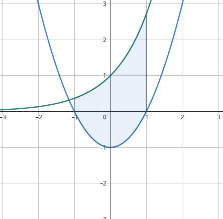
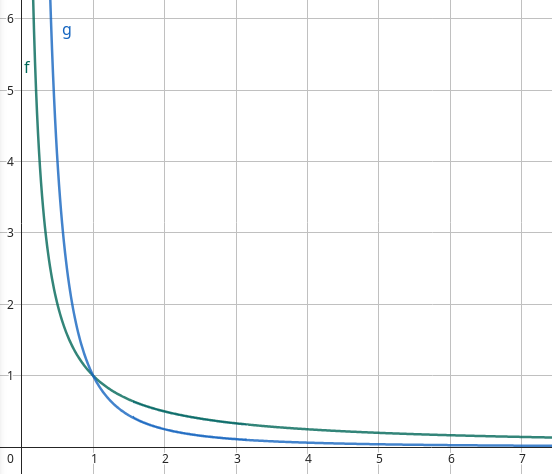
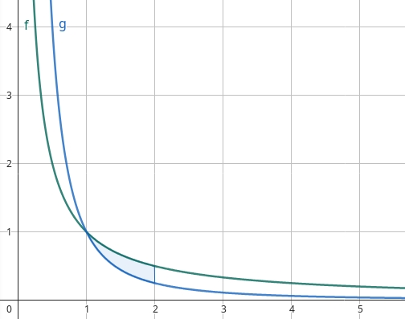
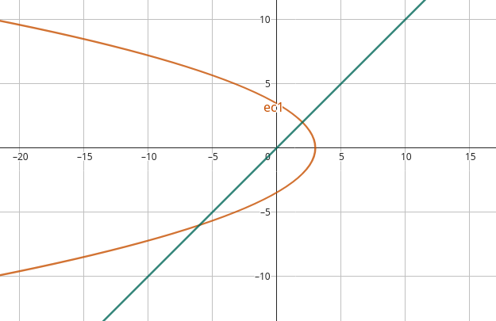
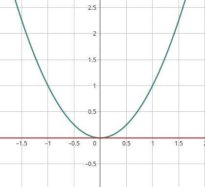
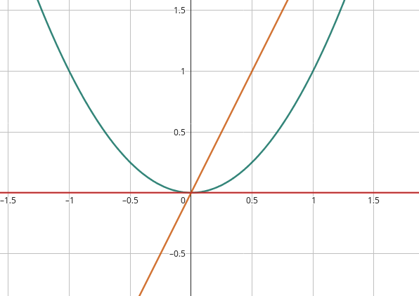
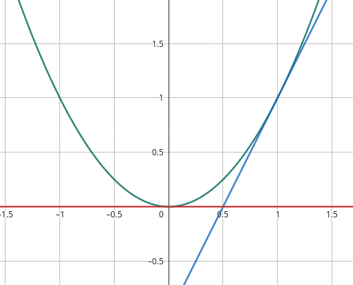
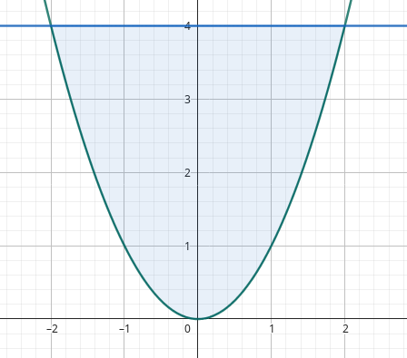
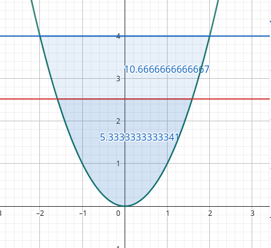

Área entre curvas
Ejercicio 1
Grafica las regiones encerradas por cada una de las curvas dadas. Decida si integra con respecto a ó . Determina el área de la región: y= {e} ^ {x} , y= {x} ^ {2} -1, x=-1 , x=1
f(x)= e^x está por encima de g(x)=x^2-1 en el intervalo [-1,1].

Por lo que el área entre las curvas se puede calcular como la función superior menos la función inferior: A = \int_{-1}^{1} (e^x - (x^2 - 1)) dx A = \int_{-1}^{1} (e^x + 1 - x^2) dx A = \left[ e^x + x - \frac{x^3}{3} \right]_{-1}^{1} A = \left[ e^1 + 1 - \frac{1}{3} \right] - \left[ e^{-1} - 1 + \frac{1}{3} \right] A = \left[ e + 1 - \frac{1}{3} \right] - \left[ \frac{1}{e} - 1 + \frac{1}{3} \right]
A = \left[ e + 1 - \frac{1}{3} \right] - \left[ \frac{1}{e} - 1 + \frac{1}{3} \right] A = e + 1 - \frac{1}{3} - \frac{1}{e} + 1 - \frac{1}{3} A = e - \frac{1}{e} + 2 - \frac{2}{3} A = e - \frac{1}{e} + \frac{6}{3} - \frac{2}{3} A = e - \frac{1}{e} + \frac{4}{3} A \approx 3.68
Ejercicio 2
y= \sin {\left (x \right )} ,\hspace{2mm} y=x, \hspace{2mm}x= \frac{π}{2} , \hspace{2mm}x=π
f(x)= x está por encima de g(x)=\sin(x) en el intervalo [\frac{\pi}{2},\pi].

Por lo que el área entre las curvas se puede calcular como la función superior menos la función inferior: A = \int_{\frac{\pi}{2}}^{\pi} (x - \sin(x)) dx A = \left[ \frac{x^2}{2} + \cos(x) \right]_{\frac{\pi}{2}}^{\pi} A = \left[ \frac{\pi^2}{2} + \cos(\pi) \right] - \left[ \frac{(\frac{\pi}{2})^2}{2} + \cos(\frac{\pi}{2}) \right] A = \left[ \frac{\pi^2}{2} - 1 \right] - \left[ \frac{\pi^2}{8} + 0 \right] A = \frac{\pi^2}{2} - 1 - \frac{\pi^2}{8}
A = \frac{4\pi^2}{8} - 1 - \frac{\pi^2}{8} A = \frac{4\pi^2 - \pi^2}{8} - 1 A = \frac{3\pi^2}{8} - 1 A \approx 2.70
Ejercicio 3
y= \frac{1}{x} , \hspace{2mm} y= \frac{1}{{x} ^ {2}} , \hspace{2mm}x=2
f(x)= \frac{1}{x} \hspace{2mm} g(x)= \frac{1}{x^2} Solo nos dan un límite superior, el inferior es la intersección de las dos funciones: \frac{1}{x} = \frac{1}{x^2} x^2 = x x^2 - x = 0 x(x-1) = 0 0 no es válido, por lo que la intersección es en x=1.
En el intervalo [1,2] la función f(x)=\frac{1}{x} está por encima de g(x)=\frac{1}{x^2}.

Por lo que el área entre las curvas se puede calcular como la función superior menos la función inferior:

A = \int_{1}^{2} \left( \frac{1}{x} - \frac{1}{x^2} \right) dx A = \int_{1}^{2} \left( \frac{1}{x} - x^{-2} \right) dx A = \left[ \ln(x) + \frac{1}{x} \right]_{1}^{2} A = \left[ \ln(2) + \frac{1}{2} \right] - \left[ \ln(1) + 1 \right] A = \left[ \ln(2) + \frac{1}{2} \right] - \left[ 0 + 1 \right]
A = \ln(2) + \frac{1}{2} - 1 A = \ln(2) - \frac{1}{2} A \approx 0.19
Ejercicio 4
4x+ {y} ^ {2} =12, x=y
En primer lugar, deberiamos notar que la primera ecuación es una parabola que se abre hacia la izquierda, y la segunda es una recta que pasa por el origen y tiene pendiente 1.

Podriamos definir las funciones en base a y para simplificar el proceso de integración
Es decir, despejamos x en la primera ecuación: 4x = 12 - y^2 x = \frac{12 - y^2}{4} x = 3 - \frac{y^2}{4}
Igualamos la segunda ecuación a la primera: 3 - \frac{y^2}{4} = y
3 - y = \frac{y^2}{4} 12 - 4y = y^2 y^2 + 4y - 12 = 0 Factorizando conseguimos las raíces: (y - 2)(y + 6) = 0 y = 2 \hspace{2mm} y = -6 Estos son los límites de integración en y.
Entonces tenemos que integrar en la función superior menos la función inferior, para deducir esto cuando la función depende de y, vemos la función que se situa más a la derecha, que en este caso es la parabola. A = \int_{-6}^{2} \left( 3 - \frac{ y^2}{4} - y \right) dy A = \int_{-6}^{2} \left( 3 - y - \frac{y^2}{4} \right) dy A = \left[ 3y - \frac{y^2}{2} - \frac{y^3}{12} \right]_{-6}^{2} A = \left[ 3(2) - \frac{(2)^2}{2} - \frac{(2)^3}{12} \right] - \left[ 3(-6) - \frac{(-6)^2}{2} - \frac{(-6)^3}{12} \right]
A = \left[ 6 - 2 - \frac{8}{12} \right] - \left[ -18 - 18 + 18 \right] A = \left[ 6 - 2 - \frac{2}{3} \right] - \left[ -18 \right] A = \left[ 4 - \frac{2}{3} \right] + 18 A = \left[ \frac{12}{3} - \frac{2}{3} \right] + 18 A = \left[ \frac{10}{3} \right] + 18 A = \frac{64}{3}
Ejercicio 5
Encuentra el área de la región definida por la parábola y = x^2 , la recta tangente a esta parábola en (1,1) y el eje X.
Veamos la gŕafica:

Tenemos que calcular la ecuación de la recta tangente a la parábola en el punto (1,1).
Para esto necesitamos la derivada de la función y = x^2: \frac{dy}{dx} = 2x Pero al graficar esta función, queda centrada en el origen.

Por lo que hay que moverla para que sea tangente. Podemos moverlo una unidad hacia arriba sumando 1 y uno a la derecha reemplazando x por x-1. y = 2(x-1) + 1 y = 2x - 1

Ahora tenemos que encontrar el área entre la parábola y la recta, la forma más sencilla seria integrar en y. Podemos definir los límites de integración como la intersección y el eje x. Para encontrar la intersección, definimos ambos funciones en base a y. La primera función queda: y = x^2 x = \sqrt{y} Para la segunda función: y = 2x - 1 x = \frac{y + 1}{2}
Igualamos ambas funciones: \sqrt{y} = \frac{y + 1}{2} 2\sqrt{y} = y + 1 Elevando al cuadrado: 4y = y^2 + 2y + 1 y^2 - 2y + 1 = 0 Factorizando: (y - 1)^2 = 0
Dado que solo hay 1 punto de intersección, ambas soluciones son iguales. Nuestros límites de integración son y=0 y y=1. Integramos restando la función superior (la recta) menos la inferior (parábola): A = \int_{0}^{1} \left( \frac{y + 1}{2} - \sqrt{y} \right) dy A = \int_{0}^{1} \left( \frac{y}{2} + \frac{1}{2} - y^{\frac{1}{2}} \right) dy A = \left[ \frac{y^2}{4} + \frac{y}{2} - \frac{y^{\frac{3}{2}}}{\frac{3}{2}} \right]_{0}^{1} A = \left[ \frac{(1)^2}{4} + \frac{(1)}{2} - \frac{(1)^{\frac{3}{2}}}{\frac{3}{2}} \right] - \left[ 0 + 0 - 0 \right]
A = \left[ \frac{1}{4} + \frac{1}{2} - \frac{2}{3} \right] A = \left[ \frac{1}{4} + \frac{2}{4} - \frac{8}{12} \right] A = \left[ \frac{3}{4} - \frac{2}{3} \right] A = \left[ \frac{9}{12} - \frac{8}{12} \right] A = \frac{1}{12}
Ejercicio 6
Determina el número tal que la recta y=b divide a la región delimitada por las curvas y=x^2 e y=4 en dos regiones de igual área.

Primero encontremos el área total entre las dos curvas. Conseguimos los límites de integración al igualar ambas funciones: x^2 = 4 x = \sqrt{4} x = 2 x = -2 Restamos la función superior menos la inferior: A = \int_{-2}^{2} (4 - x^2) dx
A = \left[ 4x - \frac{x^3}{3} \right]_{-2}^{2} A = \left[ 4(2) - \frac{(2)^3}{3} \right] - \left[ 4(-2) - \frac{(-2)^3}{3} \right] A = \left[ 8 - \frac{8}{3} \right] - \left[ -8 + \frac{8}{3} \right] A = \left[ 8 - \frac{8}{3} + 8 - \frac{8}{3} \right] A = \left[ 16 - \frac{16}{3} \right] A = \left[ \frac{48}{3} - \frac{16}{3} \right]
A = \frac{32}{3} Nos preguntan por el valor de b tal que el área entre la recta y la parábola sea la mitad del área total. \frac{A}{2} = \frac{32}{3} \cdot \frac{1}{2} = \frac{16}{3}
El area entre la nueva recta y la parabola debe ser \frac{16}{3}. A = \int (b - x^2) dx = \frac{16}{3}
Para integrar esto necesitamos los límites de integración. Estos son los puntos de intersección entre la recta y la parábola. b = x^2 x = \sqrt{b} x = -\sqrt{b} Integramos entre -\sqrt{b} y \sqrt{b}: \int_{-\sqrt{b}}^{\sqrt{b}} (b - x^2) dx = \frac{16}{3} \int_{-\sqrt{b}}^{\sqrt{b}} b dx - \int_{-\sqrt{b}}^{\sqrt{b}} x^2 dx = \frac{16}{3}
\left[ b x \right]_{-\sqrt{b}}^{\sqrt{b}} - \left[ \frac{x^3}{3} \right]_{-\sqrt{b}}^{\sqrt{b}} = \frac{16}{3} \left[ b \sqrt{b} - b (-\sqrt{b}) \right] - \left[ \frac{(\sqrt{b})^3}{3} - \frac{(-\sqrt{b})^3}{3} \right] = \frac{16}{3} \left[ b \sqrt{b} + b \sqrt{b} \right] - \left[ \frac{b^{\frac{3}{2}}}{3} + \frac{b^{\frac{3}{2}}}{3} \right] = \frac{16}{3} \left[ 2b \sqrt{b} - \frac{2b^{\frac{3}{2}}}{3} \right] = \frac{16}{3} \left[ 2b^{\frac{3}{2}} - \frac{2b^{\frac{3}{2}}}{3} \right] = \frac{16}{3}
\left[ \frac{6b^{\frac{3}{2}} - 2b^{\frac{3}{2}}}{3} \right] = \frac{16}{3} \left[ \frac{4b^{\frac{3}{2}}}{3} \right] = \frac{16}{3} 4b^{\frac{3}{2}} = 16 b^{\frac{3}{2}} = 4 b = 4^{\frac{2}{3}} b = \sqrt[3]{16}
Por lo que el valor de b es \sqrt[3]{16}. Para comprobar esto, podemos calcular el área entre la recta y la parábola. A = \int_{-\sqrt[6]{16}}^{\sqrt[6]{16}} (b - x^2) dx A = \int_{-\sqrt[6]{16}}^{\sqrt[6]{16}} \left( \sqrt[3]{16} - x^2 \right) dx A = \left[ \sqrt[3]{16} x - \frac{x^3}{3} \right]_{-\sqrt[6]{16}}^{\sqrt[6]{16}} A = \left[ \sqrt[3]{16} \sqrt[6]{16} - \frac{(\sqrt[6]{16})^3}{3} \right] - \left[ \sqrt[3]{16} (-\sqrt[6]{16}) - \frac{(-\sqrt[6]{16})^3}{3} \right]
A = \left[ 4 - \frac{\sqrt{16}}{3} \right] - \left[ -4 + \frac{\sqrt{16}}{3} \right] A = \left[ 4 - \frac{4}{3} + 4 - \frac{4}{3} \right] A = \left[ 8 - \frac{8}{3} \right] A = \left[ \frac{24}{3} - \frac{8}{3} \right] A = \frac{16}{3}
Efectivamente el área entre la recta y la parábola es \frac{16}{3}.
